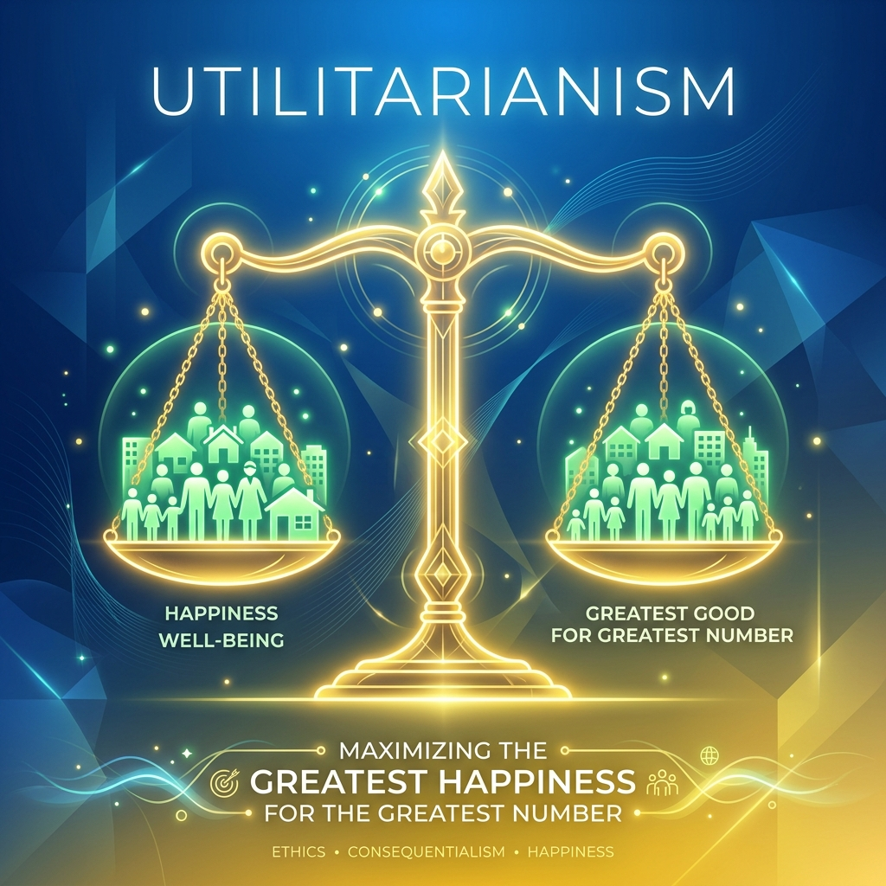

Hành trình Ánh sáng thời đại: Tổng hợp ôn thi Triết học Mác - Lênin cho sinh viên

"Hội thi Ánh sáng thời đại không chỉ là một sân chơi học thuật đỉnh cao về các môn khoa học Mác - Lênin, mà còn là hành trình thắp sáng thế giới quan duy vật biện chứng khoa học cho thế hệ sinh viên Việt Nam."
Triết học Mác - Lênin từ lâu đã trở thành một phần không thể thiếu trong chương trình đào tạo đại học tại Việt Nam. Đối với nhiều sinh viên, đây là môn học đầy thách thức với lượng khái niệm học thuật khổng lồ và tính trừu tượng cực kỳ cao. Nhằm tạo dựng một sân chơi bổ ích, kích thích tinh thần tự học và nghiên cứu khoa học, **Hội thi Olympic các môn khoa học Mác - Lênin và Tư tưởng Hồ Chí Minh "Ánh sáng thời đại"** đã ra đời, thu hút hàng chục ngàn sinh viên tham gia tranh tài xuất sắc hằng năm.
1. Tổng ôn kiến thức trọng tâm về Nguồn gốc & Bản chất Ý thức
Để đạt kết quả cao trong hội thi cũng như kỳ thi kết thúc học phần, sinh viên cần nắm vững các luận điểm cốt lõi nhất về chủ đề **Ý thức**:
- Nguồn gốc tự nhiên: Gồm hai yếu tố là não bộ con người (cơ quan phản ánh vật chất tinh vi nhất) và sự tác động của thế giới khách quan lên não bộ tạo ra hiện tượng phản ánh.
- Nguồn gốc xã hội (Nhân tố quyết định): Gồm lao động (sáng tạo ra con người, làm thay đổi cấu trúc não bộ) và ngôn ngữ (cái vỏ vật chất của tư duy, phương tiện giao tiếp truyền tải thông tin trừu tượng).
- Bản chất của ý thức: Là hình ảnh chủ quan của thế giới khách quan, mang tính năng động, sáng tạo tích cực cải biến thông tin và mô hình hóa thực tại chứ không sao chép thụ động.
- Kết cấu ý thức: Gồm tri thức, tình cảm, ý chí (trong đó tri thức là hạt nhân cơ bản nhất), tích hợp cùng tự ý thức, tiềm thức và vô thức tạo nên thế giới tinh thần toàn diện.
2. Bí quyết học tập và ôn thi hiệu quả
Thay vì học vẹt hay ghi nhớ máy móc các định nghĩa phức tạp, các thủ khoa của hội thi Ánh sáng thời đại chia sẻ ba phương pháp học tập đột phá:
Một là **liên hệ thực tiễn xã hội**. Triết học là sự khái quát hóa từ đời sống thực tế. Khi học về quy luật lượng - chất, hãy liên hệ ngay với quá trình tích lũy kiến thức từng ngày để tạo ra bước nhảy thi cử thành công. Khi học về sự tha hóa của lao động, hãy đối chiếu với hiện tượng áp lực công việc của thế hệ trẻ ngày nay.
Hai là **vẽ sơ đồ tư duy (Mindmap)**. Sơ đồ hóa các mối quan hệ biện chứng giúp bạn có cái nhìn bao quát hệ thống, dễ dàng nhớ sâu và tái hiện kiến thức chính xác trong phòng thi.
Ba là **tham gia thảo luận nhóm và các câu lạc bộ học thuật**. Việc tranh biện, giải thích lý thuyết cho người khác hiểu chính là cách tốt nhất để củng cố tri thức và rèn luyện tư duy phản biện sắc bén.
3. Kiến tạo thế giới quan khoa học vững chắc
Vượt ra ngoài mục tiêu điểm số trước mắt, việc thấu hiểu Triết học Mác - Lênin trang bị cho các bạn sinh viên một **thế giới quan duy vật biện chứng khoa học** vô cùng vững vàng. Thế giới quan này giúp người trẻ nhìn nhận cuộc sống một cách khách quan, biện chứng và toàn diện; từ đó bình thản đối mặt trước những biến động thời đại, tránh xa những ảo tưởng mê tín dị đoan và tự tin định vị giá trị bản thân trên con đường lập thân, lập nghiệp tương lai.
Bài báo gốc: Tuổi Trẻ Online, "Giao lưu trực tuyến Ánh sáng thời đại". Tổng hợp các cuộc phỏng vấn, tư vấn phương pháp ôn thi, làm bài thi trắc nghiệm và tự luận triết học xuất sắc từ các chuyên gia giáo dục và sinh viên đạt giải cao.
open_in_new Xem bài viết gốc trên Tuổi Trẻ